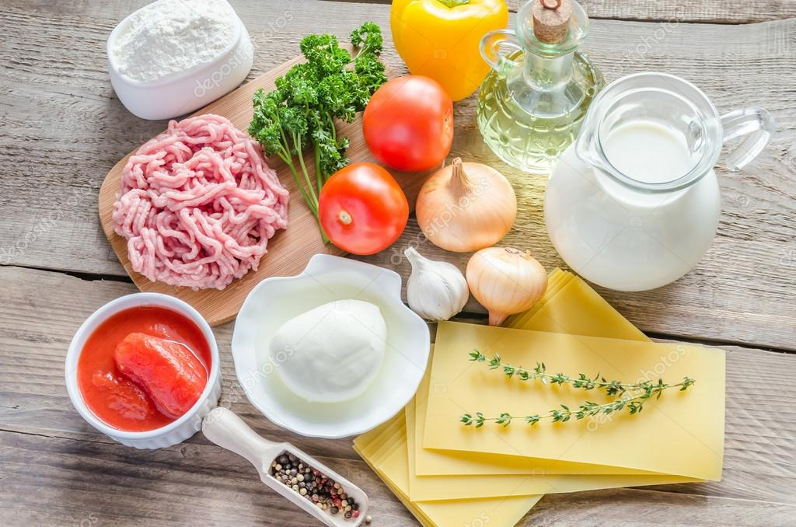
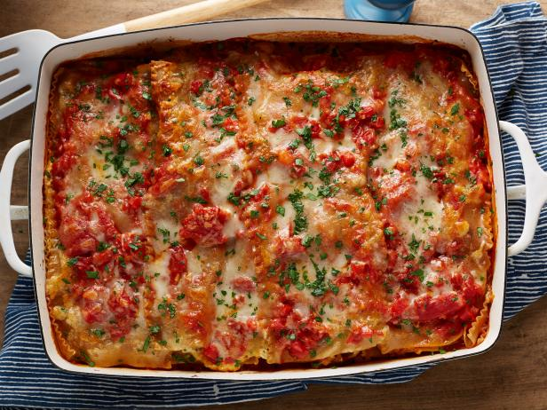
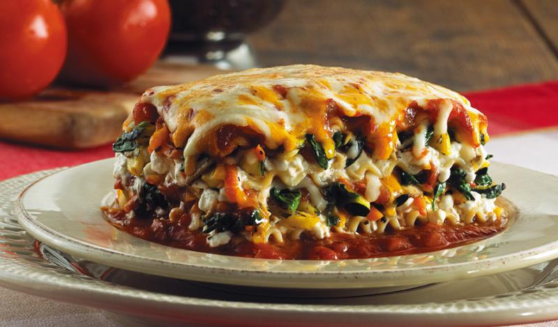

Easiest Lasagna Dish Ever
Nothing beats classic lasagna. And this is the easiest recipe you will ever make. It can be made ahead and it’s freezer-friendly too!

Ingredients
- 9 lasagna noodles
- 1 tablespoon olive oil
- 1 pound ground beef
- 1 onion diced
- Kosher salt and freshly ground black pepper
- 1 can crushed tomatoes
- 1 tablespoon Italian seasoning
- 1 package whole milk roctta
- 3 1/2 cups shredded mozzarella, divided
- 1 large egg beaten
- 1/4 cup freshly grated parmesan
- 2 tablespoons chopped fresh parsley leaves
Directions
- Preheat oven to 350 degrees F. Lightly oil a 9 x 13 baking dish or coat with nonstick spray.
- In a large pot of boiling salted water, cook lasagna noodles according to package instructions.
- Heat olive oil in a large skillet over medium high heat. Add ground beef and onion and cook until beef has browned, about 3-5 minutes, making sure to crumble the beef as it cooks; season with salt and pepper, to taste. Drain excess fat. Stir in tomatoes and Italian seasoning until well combined.
- In a medium bowl, combine ricotta, 1/2 cup mozzarella and egg; set aside.
- Spread 1 cup tomato mixture onto the bottom of a 9×13 baking dish; top with 3 lasagna noodles, 1/2 of the ricotta cheese mixture and 1 cup mozzarella cheese. Repeat with a second layer. Top with remaining noodles, tomato mixture, 1 cup mozzarella cheese and Parmesan.
- Place into oven and bake for 35-45 minutes, or until bubbling. Then boil for 2-3 minutes, or until top is browned in spots.
- Let cool for 15 minutes. Serve, garnished with parsley, if desired



What I learned:
- I have learnt how to use the "alignment" tags properly.
- I have learnt how to create an ordered list and unordered list.
- I have learnt how to upload images.
- I have learnt how to create square bullets.